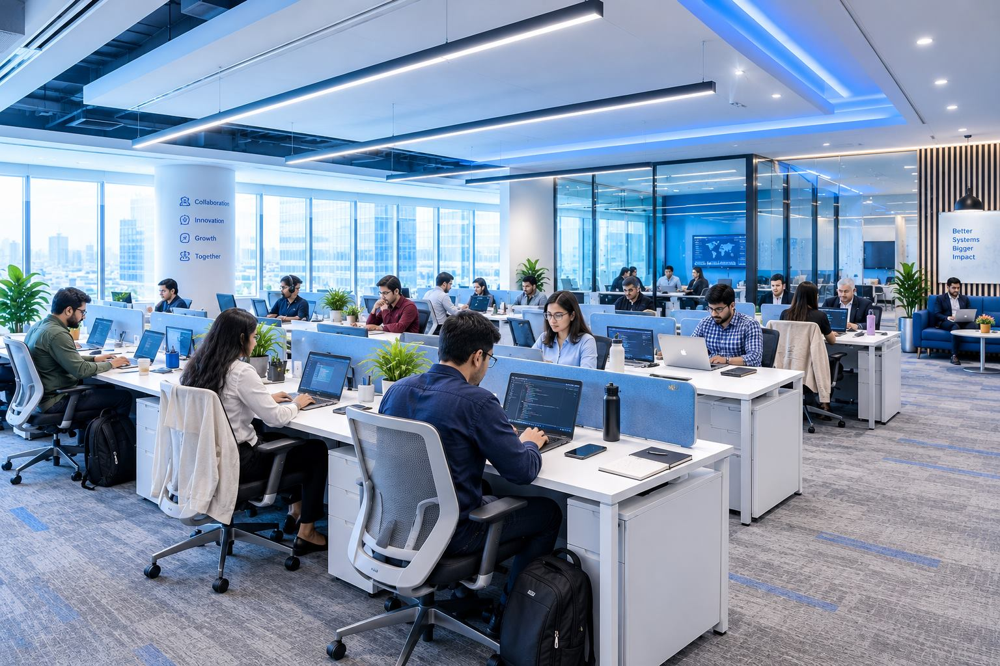

Assess
Find the gaps, friction points, compliance needs and dependencies across your instances, apps and integrations.
- Data categorization review
- Permission and access audit
- App and integration risk inventory
Clovity Federal configures, migrates and documents Jira, Confluence and JSM inside public sector security rules, so your security team can approve it.
Disconnected tools and late security slow the mission. We connect Jira, Confluence and your service desk, with security built in from the first setting.

One accountable partner, from license to audit-ready records.
No gaps between a reseller, an integrator and a help desk for an auditor to find.
Clovity Federal is the public sector practice of Clovity, Inc., an Atlassian Platinum Solution Partner. We bring that platform depth to agencies and the integrators who support them, and shape each engagement around your security review.
Mission readiness depends on tools that work together and hold up to review. Here is what a secured Atlassian platform makes possible.
Jira, Confluence and JSM on Atlassian Government Cloud, set up inside its FedRAMP Moderate boundary with hardened permissions.
Learn moreJira and Bitbucket linked for DevSecOps, so requirements, code reviews and releases are traced from start to finish.
Learn moreJira Service Management desks with an approval trail for every change, incident and access request.
Learn moreAtlassian connected to your identity provider and mission tools, with each data flow reviewed before it goes live.
Learn moreProgram and portfolio dashboards built on live Jira data, so leaders see status and risk without chasing spreadsheets.
Learn moreAI features vary by deployment. We help you set data boundaries, usage rules and review steps before anything is switched on.
Learn moreAtlassian Government Cloud (AGC) received FedRAMP Moderate authorization in March 2025 and is listed on the FedRAMP Marketplace. It covers Jira, Confluence and Jira Service Management. The authorization does not extend to Atlassian's commercial cloud or to Marketplace apps, so each app is checked on its own.
Need a higher impact level? We'll tell you plainly where AGC stands for yours.
Plan your AGC moveJira and Confluence spaces set up with permission schemes and audit settings your security team can review.
Jira Service Management portals, queues and approvals configured inside the authorized boundary.
Admin roles, SSO through your agency identity provider and configuration records for each setting.
Every Marketplace app reviewed for Government Cloud availability, data access and your policies.
Five areas where a secured Atlassian platform changes how government teams work.
Replace aging ticketing tools and email approvals with Jira Service Management workflows that record who asked, who approved and when.
Atlassian Data Center reaches end of life in March 2029. We move legacy Server and Data Center instances to the right cloud on a tested, documented plan with data governance in place.
Link requirements, code changes, reviews and releases in Jira and Bitbucket, with hardened pipelines so every change to a mission system has a traceable history.
Shared Jira and Confluence practices that let program offices, contractors and field teams plan and report the same way, with access set by role.
Experienced Atlassian administrators who run the platform for you and give strategic guidance, keeping every change inside your approved configuration.
Every engagement follows the same path. Each step ends with security artifacts your contracting officer and ISSO can review.
Find the gaps, friction points, compliance needs and dependencies across your instances, apps and integrations.

Design a secure Atlassian setup that fits your mission workflows, with controls built in from the start.

Deploy the platform, pipelines and controls, then move your data on a scheduled cutover.

Ongoing support that improves performance and resilience while keeping the platform inside its approved baseline.
Different missions, different rules. The same need: work that is controlled, documented and ready for audit.


Four results we design every engagement to deliver, whether the job is a migration, a new service desk or an agency-wide rollout.
Talk to our teamVisibility
One view across programs, built on live Jira and service desk data instead of status reports assembled by hand.
In practiceDashboards your program and IT leads read from the same source.
Control
Workflows, permissions and approvals set up to match how your agency already makes decisions, with each setting written down.
In practiceA configuration record your team can review and keep current.
Security
Least-privilege access, SSO through your identity provider and audit logs that show who changed what, and when.
In practiceSettings mapped to the controls your ATO package asks about.
Scalability
A platform designed so new teams, projects and service desks can join without reopening security gaps.
In practiceTemplates and onboarding steps for each new team.
Atlassian holds the service authorization. Your agency owns its ATO. We design around these standards and document the platform so the two meet cleanly. Commercial cloud is not FedRAMP Moderate, and we never claim an authorization we don't hold.
Our compliance approachThrough Atlassian Government Cloud only, for Jira, Confluence and JSM.
Settings mapped to access, audit, configuration and identity controls.
Identity-first access through your agency IdP, with PIV/CAC-aware sign-in.
Configurations that support contractors protecting CUI.
We'll tell you plainly where AGC stands for your impact level.
Accessible portals and records retention planned around NARA schedules.

A short readiness checklist for program and security leads.

Which settings your assessor will ask about, and how to document them.

Why AGC's authorization stops at the app, and what to check before you install one.
Talk to a federal Atlassian solutions expert about deployment, migration, security configuration or modernization. Bring your security lead. We'll review where you stand and lay out practical next steps.